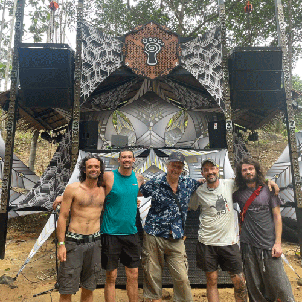

Parvati Records surge dentro de la cultura psytrance, un movimiento musical y artístico que combina
exploración sonora, espiritualidad y comunidad. Sus raíces se vinculan con la escena trance y con la
búsqueda de experiencias colectivas donde la música funciona como un lenguaje compartido entre
personas y entornos naturales.
Fundado por Giuseppe Parvati a comienzos de los años 2000 en Dinamarca, el sello nace como
una
extensión de esta visión cultural: crear un espacio independiente para la música psicodélica
underground donde la identidad artística, la conexión con la naturaleza y la experiencia colectiva
tuvieran un rol central.
El proyecto nace como una búsqueda estética: editar música psicodélica con una identidad clara y una curaduría coherente. Parvati se consolida desde el inicio como un espacio para artistas que priorizan la profundidad sonora, el detalle y la construcción de atmósferas, más allá de las tendencias.
Explorar EvoluciónEn Parvati, el sonido y la imagen trabajan juntos: arte, conceptos y atmósferas acompañan cada release para reforzar un universo común. Esa coherencia es parte de lo que vuelve al sello reconocible a lo largo del tiempo.
Con el tiempo, el sello define una firma reconocible: grooves hipnóticos, capas orgánicas y una narrativa que se construye con paciencia. La curaduría se vuelve parte central de su historia: cada lanzamiento funciona como una pieza dentro de un universo común, tanto sonoro como visual.
Explorar Evolución
La historia de Parvati no se limita a sus lanzamientos musicales. A través de gatherings, colaboraciones y encuentros culturales, el sello construye una comunidad global donde música, naturaleza y experiencia colectiva se integran. Su legado continúa evolucionando como una expresión artística viva.